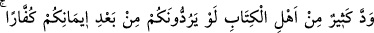
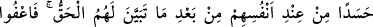
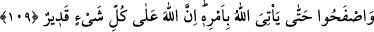

Şerîat, hükümlerden teşekkül eder. Tarîkat ise, edebdir. Şeytan ve diğer kovulanlar
ancak edebe riâyet etmedikleri için kovulmuşlardır. İbn Sîrin’e “Hangi edeb Allah’a
daha yakındır?” diye soruldu. O da: “Allah’ın rubûbiyetini bilmek, emrettikleriyle amel
etmek, bolluk ve esenlikte hamdetmek, darlık ve sıkıntıda sabretmektir.” diye cevap
verdi. Nitekim bir şâir şöyle demiştir:
Edebden nasîbi olmayan, her ne kadar ulu ise de,
Bu ululuk kendisine neseben gelmiş olsa da,
Edeb olmadığı sürece ona büyüklük denilemez.
Çünkü büyüklüğün ölçüsü ancak edebdir.
109. Ehl-i kitaptan çoğu, hakîkat kendilerine apaçık belli olduktan sonra, sırf
içlerindeki kıskançlıktan ötürü, sizi îmânınızdan vazgeçirip küfre döndürmek
istediler. Yine de siz, Allah onlar hakkındaki emrini getirinceye kadar affedip
bağışlayın. Şüphesiz Allah her şeye kâdirdir.
“Ehl-i kitabtan birçoğu istedi.” ibâresiyle anlatılanlar bir grup Yahûdî bilginidir.
Rivâyet olunduğu üzere: Fenhâs b. Âzûrâ, Zeyd b. Kays ve bir grup yahûdî, Uhud
savaşından sonra, Huzeyfe b. Yemân ve Ammar b. Yâsir’e: “Başınıza geleni görmüyor
musunuz? Eğer hak üzere olsaydınız, hezîmete uğramazdınız. Siz, en iyisi, bizim
dînimize dönün, o sizin için daha hayırlı ve daha fazîletlidir. Gittiğimiz yol da hakka,
sizinkinden daha yakındır.” dediler. Ammar: “Sizce ahdi bozmak nasıl bir şeydir?” diye
sordu. Onlar da: “Çok kötüdür.” dediler. Bunun üzerine Ammar: “Ben, yaşadığım
sürece Hz. Muhammed’i yalanlamayacağıma dâir ahidde bulundum.” dedi. Yahûdîler:
“Ammar, ebediyyen dönmeyecek şekilde dinimizden çıktı. Peki sen ne dersin ey
Huzeyfe, bize tâbi olmaz mısın?” dediler. Huzeyfe de: “Ben Rabb olarak Allah’ı, Nebî
olarak Muhammed’i, imam olarak Kur’ân’ı, kıble olarak Kâbe’yi ve kardeşler olarak
da mü’minleri seçtim.” dedi. Bunun üzerine yahûdîler: “Mûsâ’nın ilâhına yemin olsun
ki, kalblerinize Muhammed’in sevgisi sindirilmiş; yâni bu sevgi size meşreb olmuş.”
dediler. Sonra Ammar ve Huzeyfe, Rasûlullah’a geldiler ve durumu haber verdiler.
Allah Rasûlü de: “Hayırlı olanı yaptınız ve kurtuluşa erdiniz.”[354] buyurdu.
“Ey mü’minler! Bu insanlar, kendilerine Hz. Muhammed’in Allah Rasûlü olduğu,
sözlerinin ve dînin de mûcizelerle ve Tevrât’ta zikrolunan sıfatlarla hak olduğu apaçık
belli olduktan sonra, sırf rûhlarındaki hasedden ötürü veya kendi nefislerinden
kaynaklanan bir istekle îmânınızdan sonra sizleri, küfre döndürmeyi arzuladılar.